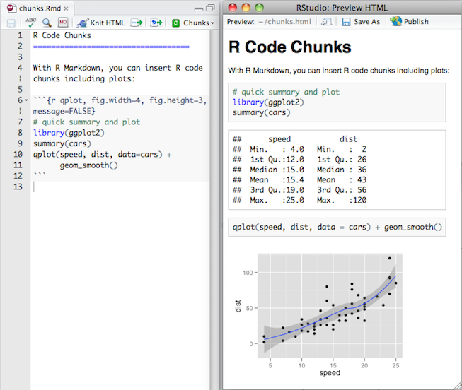
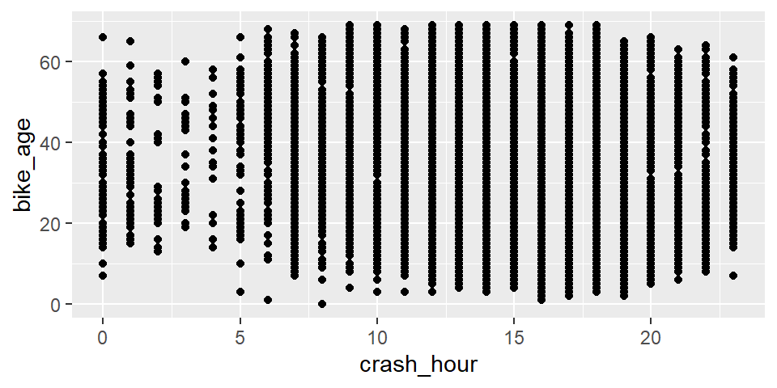
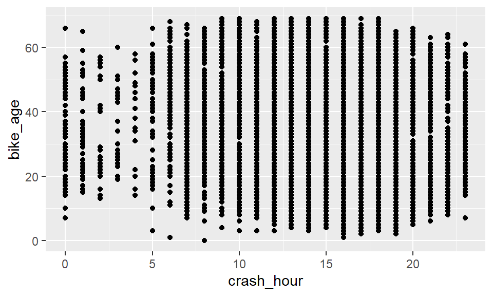
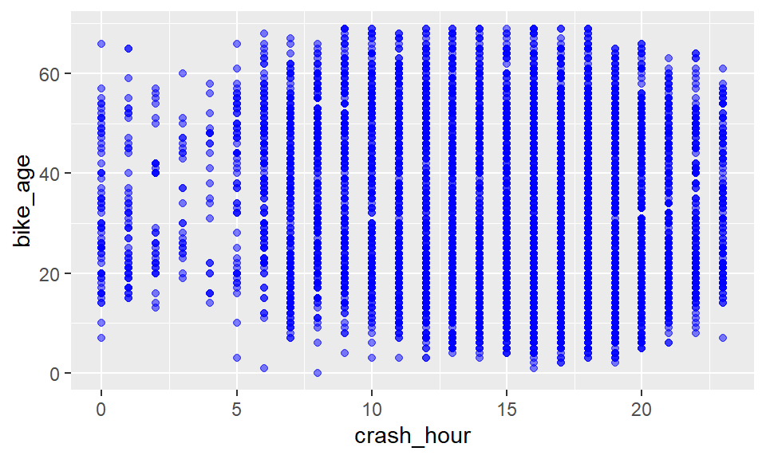
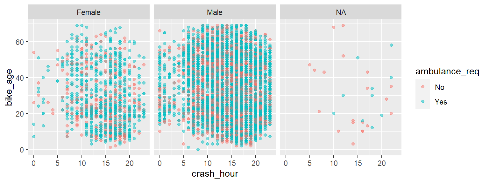
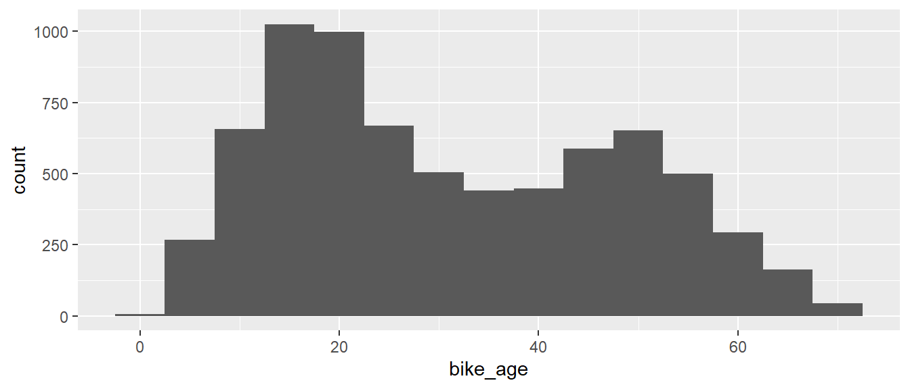
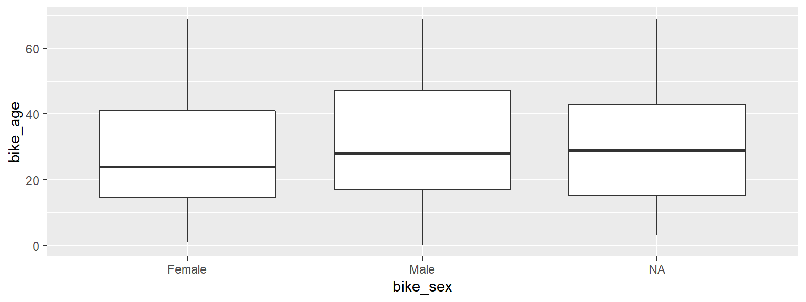
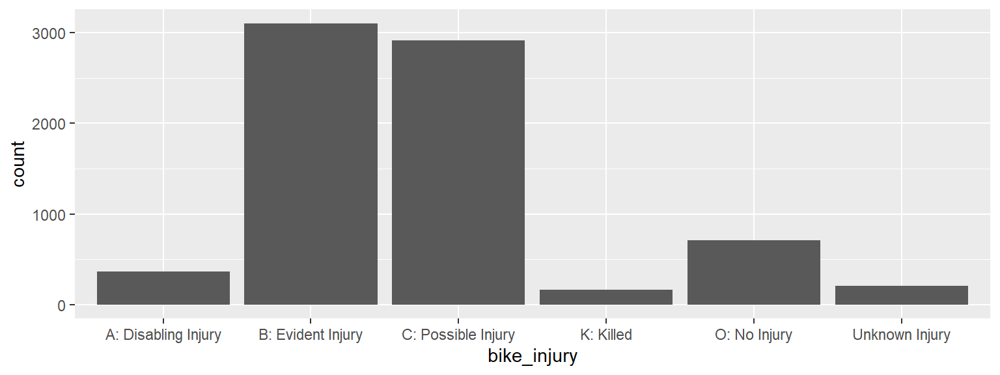
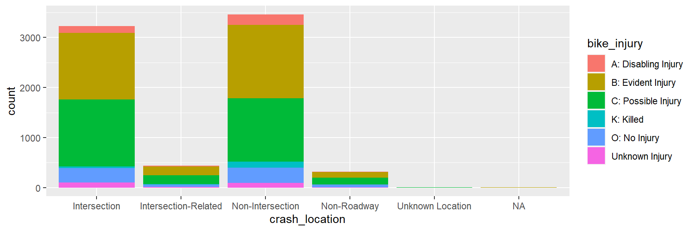
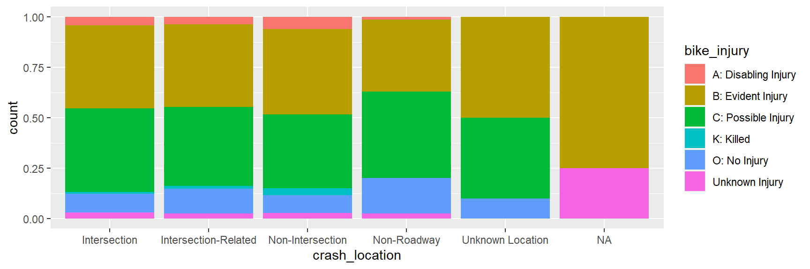

R Workshop / QAU, Islamabad
Intro
Outline
- Introduction to R and RStudio
- Reproducible data analysis with R Markdown
- Loading data
- Data visualization
- Data wrangling
- Basic R syntax
- What next?
- Hands on exercises
Materials
- All source code are taken from https://github.com/mine-cetinkaya-rundel/rworkshop-mem
Introduction to R and RStudio
What is R and RStudio
R: Statistical programming language
RStudio:
- Inregtrated development environment for R
- Powerful and productive user interface for R
Both are free and open-source
Getting started
Traditionally you would install R and RStudio on your computer
Local installation instructions will be provided at the end of the workshop
Anatomy of RStudio
- Left: Console
- Text on top at launch: version of R that you’re running
- Below that is the prompt
- Upper right: Workspace and command history
- Lower right: Plots, access to files, help, packages, data viewer

What version am I using?
The version of R is text that pops up in the Console when you start RStudio
To find out the version of RStudio go to Help \(\rightarrow\) About RStudio
It’s good practice to keep both R and RStudio up to date
R packages
Packages are the fundamental units of reproducible R code. They include reusable R functions, the documentation that describes how to use them, and (often) sample data. (From: http://r-pkgs.had.co.nz)
We will use the
ggplot2package for plots anddplyrfor data wrangling in this workshopInstall these packages by running the following in the Console:
install.packages("ggplot2")
install.packages("dplyr")- Then, load the packages by running the following:
library(ggplot2)
library(dplyr)
#library(tidyverse) this package contains a multiple packages - This is just one way of installing a package, there is also a GUI approach in the Packages pane in RStudio
Reproducible data analysis with R Markdown
What is R Markdown?
R Markdown is an authoring format that enables easy creation of dynamic documents, presentations, and reports from R.
It combines the core syntax of markdown (an easy-to-write plain text format) with embedded R code chunks that are run so their output can be included in the final document.
R Markdown documents are fully reproducible (they can be automatically regenerated whenever underlying R code or data changes).
Source: http://rmarkdown.rstudio.com/
Your turn!
Create your first R Markdown document, knit it, and examine the source code and the output.
File \(\rightarrow\) R Markdown…
Enter a title (e.g. “My first R Markdown document”) and author info
Choose Document as file type, and HTML as the output
Hit OK
Click Knit HTML in the new document, which will prompt you to save your document
- Naming tip: Do not use spaces
- Viewing tip: Click on the down arrow next to Knit HTML and select View in Pane
Markdown basics
Markdown is a simple formatting language designed to make authoring content easy for everyone.
Rather than writing complex markup code (e.g. HTML or LaTeX), Markdown enables the use of a syntax much more like plain-text email.

R Code Chunks
Within an R Markdown file, R Code Chunks can be embedded using the native Markdown syntax for fenced code regions.

Your turn!
How many code chunks are in your R Markdown document?
What does each code chunk do? You may not understand the R syntax yet, but you should be able to compare the source file and the output to answer this question.
Inline R Code
You can also evaluate R expressions inline by enclosing the expression within a single back-tick qualified with r. For example, the following code: I counted 2 trucks on highway.
Results in this output: “I counted 2 red trucks on the highway.”
Your turn!
Suppose Sammy works on average 8.37 hours per day, 5 days per week. How many hours does Sammy work on average per week?
Add a sentence to your document that includes simple inline R code that answers this question, along the lines of…
“Sammy works 8.37 * 5 hours per week, on average.”
Workspaces
R Markdown workspace and Console workspace are independent of each other
If you define a variable in your Console and it shows up in the Environment tab, it is not going to be automatically included in your R Markdown document
If you define a variable in your R Markdown document, it won’t automatically be available in your Console
[ Demo ]
Tip: Use the Run all previous chunks in the source file and Run current chunk code functionality in the buttons in each code chunk to help manage workspaces.
Workspaces and reproducibilty
The fact that the two workspaces do not automatically have access to the same variables might / will be frustrating at first.
But this is not a bug, in fact, it’s a functionality that helps reproducibility, as it ensures that all variables, functions, etc. that are being used in the R Markdown document are explicitly defined or loaded.
Your turn!
Define
x = 2in the Console. Then, in your Console runx * 3. Does your code run as expected?Now, insert a new code chunk in your R Markdown document and in this chunk type
x * 3only. Knit your document. Does the document compile, or do you get an error? If you get an error, what does the error say, and how can you fix it? Implement the fix and Knit your document. Make sure you are able to compile without errors before you move on.
Tip: Insert a new code chunk bu clicking Chunks \(\rightarrow\) Insert Chunk.
Next insert another code chunk in your R Markdown document and define
y = 4and calculatey + 5. Knit your document. Does everything work as expected?Now run
y + 5in your Console. Does your code run as expected or do you get an error? If you get an error, what does the error say, and how can you fix it? Implement the fix.
Code chunk options
You can hide the code, hide the result, hide warnings, messages, etc.
Refer to the handy R Markdown cheatsheet
Another good reference: http://rmarkdown.rstudio.com/authoring_rcodechunks.html
Loading data
NC DOT Fatal Crashes in North Carolina
library(readr)
#bike <- read_csv("https://stat.duke.edu/~mc301/data/nc_bike_crash.csv", sep = ";", stringsAsFactors = FALSE, na.strings = c("NA", "", "."))
bike<- read_csv("D:/RepTemplates/data_analytics/ncbikecrash.csv")%>%
tbl_df()Warning: `tbl_df()` was deprecated in dplyr 1.0.0.
Please use `tibble::as_tibble()` instead.
This warning is displayed once every 8 hours.
Call `lifecycle::last_lifecycle_warnings()` to see where this warning was generated.New names:
Rows: 7467 Columns: 65
── Column specification
──────────────────────────────────────────────────────── Delimiter: "," chr
(48): city, county, region, development, locality, on_road, rural_urban,... dbl
(17): ...1, object_id, bike_age, driver_age, crash_hour, crash_time, cra...
ℹ Use `spec()` to retrieve the full column specification for this data. ℹ
Specify the column types or set `show_col_types = FALSE` to quiet this message.
• `` -> `...1`View the names of variables via
names(bike) [1] "...1" "object_id" "city"
[4] "county" "region" "development"
[7] "locality" "on_road" "rural_urban"
[10] "speed_limit" "traffic_control" "weather"
[13] "workzone" "bike_age" "bike_age_group"
[16] "bike_alcohol" "bike_alcohol_drugs" "bike_direction"
[19] "bike_injury" "bike_position" "bike_race"
[22] "bike_sex" "driver_age" "driver_age_group"
[25] "driver_alcohol" "driver_alcohol_drugs" "driver_est_speed"
[28] "driver_injury" "driver_race" "driver_sex"
[31] "driver_vehicle_type" "crash_alcohol" "crash_date"
[34] "crash_day" "crash_group" "crash_hour"
[37] "crash_location" "crash_month" "crash_severity"
[40] "crash_time" "crash_type" "crash_year"
[43] "ambulance_req" "hit_run" "light_condition"
[46] "road_character" "road_class" "road_condition"
[49] "road_configuration" "road_defects" "road_feature"
[52] "road_surface" "num_bikes_ai" "num_bikes_bi"
[55] "num_bikes_ci" "num_bikes_ki" "num_bikes_no"
[58] "num_bikes_to" "num_bikes_ui" "num_lanes"
[61] "num_units" "distance_mi_from" "frm_road"
[64] "rte_invd_cd" "towrd_road" and see detailed descriptions at https://stat.duke.edu/~mc301/data/nc_bike_crash.html.
Aside: Strings (characters) vs factors
By default R will convert character vectors into factors when they are included in a data frame.
Sometimes this is useful, sometimes it isn’t – either way it is important to know what type/class you are working with.
This behavior can be changed using the
stringsAsFactors = FALSEwhen loading a data drame.
Viewing your data
In the Environment, click on the name of the data frame to view it in the data viewer
Use the
str()function to compactly display the internal structure of an R object
str(bike)tibble [7,467 × 65] (S3: tbl_df/tbl/data.frame)
$ ...1 : num [1:7467] 1 2 3 4 5 6 7 8 9 10 ...
$ object_id : num [1:7467] 1686 1674 1673 1687 1653 ...
$ city : chr [1:7467] "None - Rural Crash" "Henderson" "None - Rural Crash" "Whiteville" ...
$ county : chr [1:7467] "Wayne" "Vance" "Lincoln" "Columbus" ...
$ region : chr [1:7467] "Coastal" "Piedmont" "Piedmont" "Coastal" ...
$ development : chr [1:7467] "Farms, Woods, Pastures" "Residential" "Farms, Woods, Pastures" "Commercial" ...
$ locality : chr [1:7467] "Rural (<30% Developed)" "Mixed (30% To 70% Developed)" "Rural (<30% Developed)" "Urban (>70% Developed)" ...
$ on_road : chr [1:7467] "SR 1915" "NICHOLAS ST" "US 321" "W BURKHEAD ST" ...
$ rural_urban : chr [1:7467] "Rural" "Urban" "Rural" "Urban" ...
$ speed_limit : chr [1:7467] "50 - 55 MPH" "30 - 35 MPH" "50 - 55 MPH" "30 - 35 MPH" ...
$ traffic_control : chr [1:7467] "No Control Present" "Stop Sign" "Double Yellow Line, No Passing Zone" "No Control Present" ...
$ weather : chr [1:7467] "Clear" "Clear" "Clear" "Rain" ...
$ workzone : chr [1:7467] "No" "No" "No" "No" ...
$ bike_age : num [1:7467] 52 66 33 52 22 15 41 14 16 54 ...
$ bike_age_group : chr [1:7467] "50-59" "60-69" "30-39" "50-59" ...
$ bike_alcohol : chr [1:7467] "No" "No" "No" "Yes" ...
$ bike_alcohol_drugs : chr [1:7467] NA NA NA NA ...
$ bike_direction : chr [1:7467] "With Traffic" "With Traffic" "With Traffic" NA ...
$ bike_injury : chr [1:7467] "B: Evident Injury" "C: Possible Injury" "C: Possible Injury" "C: Possible Injury" ...
$ bike_position : chr [1:7467] "Bike Lane / Paved Shoulder" "Travel Lane" "Travel Lane" NA ...
$ bike_race : chr [1:7467] "Black" "Black" "White" "Black" ...
$ bike_sex : chr [1:7467] "Male" "Male" "Male" "Male" ...
$ driver_age : num [1:7467] 34 NA 37 55 25 17 NA 50 32 69 ...
$ driver_age_group : chr [1:7467] "30-39" NA "30-39" "50-59" ...
$ driver_alcohol : chr [1:7467] "No" "Missing" "No" "No" ...
$ driver_alcohol_drugs: chr [1:7467] NA NA NA NA ...
$ driver_est_speed : chr [1:7467] "51-55 mph" "6-10 mph" "41-45 mph" "11-15 mph" ...
$ driver_injury : chr [1:7467] "O: No Injury" "Unknown Injury" "O: No Injury" "O: No Injury" ...
$ driver_race : chr [1:7467] "White" "Unknown/Missing" "Hispanic" "Black" ...
$ driver_sex : chr [1:7467] "Male" NA "Female" "Male" ...
$ driver_vehicle_type : chr [1:7467] "Single Unit Truck (2-Axle, 6-Tire)" NA "Passenger Car" "Passenger Car" ...
$ crash_alcohol : chr [1:7467] "No" "No" "No" "Yes" ...
$ crash_date : chr [1:7467] "11DEC2013" "20NOV2013" "03NOV2013" "14DEC2013" ...
$ crash_day : chr [1:7467] "Wednesday" "Wednesday" "Sunday" "Saturday" ...
$ crash_group : chr [1:7467] "Motorist Overtaking Bicyclist" "Bicyclist Failed to Yield - Sign-Controlled Intersection" "Motorist Overtaking Bicyclist" "Bicyclist Failed to Yield - Signalized Intersection" ...
$ crash_hour : num [1:7467] 6 20 18 18 13 17 17 7 15 2 ...
$ crash_location : chr [1:7467] "Non-Intersection" "Intersection" "Non-Intersection" "Intersection" ...
$ crash_month : chr [1:7467] "December" "November" "November" "December" ...
$ crash_severity : chr [1:7467] "B: Evident Injury" "C: Possible Injury" "C: Possible Injury" "C: Possible Injury" ...
$ crash_time : num [1:7467] 22200 74460 65100 66840 48420 ...
$ crash_type : chr [1:7467] "Motorist Overtaking - Undetected Bicyclist" "Bicyclist Ride Out - Sign-Controlled Intersection" "Motorist Overtaking - Undetected Bicyclist" "Bicyclist Ride Out - Signalized Intersection" ...
$ crash_year : num [1:7467] 2013 2013 2013 2013 2013 ...
$ ambulance_req : chr [1:7467] "Yes" "No" "Yes" "Yes" ...
$ hit_run : chr [1:7467] "No" "Yes" "No" "No" ...
$ light_condition : chr [1:7467] "Dark - Roadway Not Lighted" NA "Dark - Roadway Not Lighted" "Dark - Lighted Roadway" ...
$ road_character : chr [1:7467] "Straight - Level" "Straight - Level" "Straight - Grade" "Straight - Level" ...
$ road_class : chr [1:7467] "State Secondary Route" "Local Street" "US Route" "Local Street" ...
$ road_condition : chr [1:7467] "Dry" "Dry" "Dry" "Water (Standing, Moving)" ...
$ road_configuration : chr [1:7467] "Two-Way, Not Divided" "Two-Way, Divided, Unprotected Median" "Two-Way, Not Divided" "Two-Way, Not Divided" ...
$ road_defects : chr [1:7467] "None" NA "None" "None" ...
$ road_feature : chr [1:7467] "No Special Feature" "T-Intersection" "No Special Feature" "No Special Feature" ...
$ road_surface : chr [1:7467] "Coarse Asphalt" "Smooth Asphalt" "Smooth Asphalt" "Coarse Asphalt" ...
$ num_bikes_ai : num [1:7467] 0 0 0 0 0 0 0 0 0 0 ...
$ num_bikes_bi : num [1:7467] 0 0 0 0 0 0 0 0 0 0 ...
$ num_bikes_ci : num [1:7467] 0 0 0 0 0 0 0 0 0 0 ...
$ num_bikes_ki : num [1:7467] 0 0 0 0 0 0 0 0 0 0 ...
$ num_bikes_no : num [1:7467] 0 0 0 0 0 0 0 0 0 0 ...
$ num_bikes_to : num [1:7467] 0 0 0 0 0 0 0 0 0 0 ...
$ num_bikes_ui : num [1:7467] 0 0 0 0 0 0 0 0 0 0 ...
$ num_lanes : chr [1:7467] "2 lanes" "2 lanes" "2 lanes" "1 lane" ...
$ num_units : num [1:7467] 2 2 2 2 2 2 2 2 2 2 ...
$ distance_mi_from : num [1:7467] 0 0 0 0 0 0 0 0 0 0 ...
$ frm_road : chr [1:7467] NA NA NA NA ...
$ rte_invd_cd : num [1:7467] 0 0 0 0 0 0 0 0 0 0 ...
$ towrd_road : chr [1:7467] NA NA NA NA ...Data visualization
Data visualization in R
Using base R functions
Using the
ggplot2package \(\leftarrow\) our focus todayUsing a variety of other packages like
lattice,ggvis, etc.
The Grammar of Graphics
- Visualisation concept created by Wilkinson (1999)
- to define the basic elements of a statistical graphic
- Adapted for R by Wickham (2009) who created the
ggplot2package- consistent and compact syntax to describe statistical graphics
- highly modular as it breaks up graphs into semantic components
- Is not a guide which graph to choose and how to convey information best!
Source: https://rpubs.com/timwinke/ggplot2workshop
The Grammar of Graphics - Terminology
A statistical graphic is a…
- mapping of data
- to aesthetic attributes (color, size, xy-position)
- using geometric objects (points, lines, bars)
- with data being statistically transformed (summarised, log-transformed)
- and mapped onto a specific facet and coordinate system
Biker age vs. crash hour

- Which data is used as an input?
- What geometric objects are chosen for visualization?
- What variables are mapped onto which attributes?
- What type of scales are used to map data to aesthetics?
- Are the variables statistically transformed before plotting?
Biker age vs. crash hour - code
ggplot(data = bike, aes(x = crash_hour, y = bike_age)) +
geom_point()Warning: Removed 209 rows containing missing values (geom_point).
Altering features

- How did the plot change?
- Are these changes based on data (i.e. can be mapped to variables in the dataset) or changes in preferences for geometric objects?
Altering features - code
ggplot(data = bike, aes(x = crash_hour, y = bike_age)) +
geom_point(alpha = 0.5, color = "blue")Warning: Removed 209 rows containing missing values (geom_point).
More alterations

- How did the plot change?
- Are these changes based on data (i.e. can be mapped to variables in the dataset) or changes in preferences for geometric objects?
More alterations - code
ggplot(data = bike, aes(x = crash_hour, y = bike_age, color = ambulance_req)) +
geom_point(alpha = 0.5) +
facet_grid(. ~ bike_sex)
Anatomy of ggplots
ggplot(data = [dataframe], aes(x = [var_x], y = [var_y],
color = [var_for_color], fill = [var_for_fill],
shape = [var_for_shape])) +
geom_[some_geom] +
... # other optionsHistograms
ggplot(data = bike, aes(x = bike_age)) +
geom_histogram(binwidth = 5)
Boxplots
ggplot(data = bike, aes(y = bike_age, x = bike_sex)) +
geom_boxplot()
Barplots
ggplot(data = bike, aes(x = bike_injury)) +
geom_bar()
Segmented barplots
ggplot(data = bike, aes(x = crash_location, fill = bike_injury)) +
geom_bar()
Segmented barplots - proportions
ggplot(data = bike, aes(x = crash_location, fill = bike_injury)) +
geom_bar(position="fill")
More ggplot2 resources
Visit http://docs.ggplot2.org/current/ for documentation on the current version of the
ggplot2package. It’s full of examples!Refer to the
ggplot2cheatsheet.
Data wrangling
Data wrangling in R
Using base R functions
Using the
dplyrpackage \(\leftarrow\) our focus todayUsing a variety of other packages like
plyr,tidyr,lubridate, etc.
Data wrangling with dplyr
The dplyr package is based on the concepts of functions as verbs that manipulate data frames:
filter(): pick rows matching criteriaselect(): pick columns by namerename(): rename specific columnsarrange(): reorder rowsmutate(): add new variablestransmute(): create new data frame with variablessample_n()/sample_frac(): randomly sample rowssummarise(): reduce variables to values
dplyr rules
- First argument is a data frame
- Subsequent arguments say what to do with data frame
- Always return a data frame
- Avoid modify in place
Filter rows with filter()
- Select a subset of rows in a data frame.
- Easily filter for many conditions at once.
filter()
for crashes in Durham County
bike %>%
filter(county == "Durham")# A tibble: 340 × 65
...1 object_id city county region development locality on_road rural_urban
<dbl> <dbl> <chr> <chr> <chr> <chr> <chr> <chr> <chr>
1 24 2452 Durham Durham Piedm… Residential Urban (… <NA> Urban
2 28 2441 Durham Durham Piedm… Commercial Urban (… <NA> Urban
3 37 2466 Durham Durham Piedm… Commercial Urban (… <NA> Urban
4 63 549 Durham Durham Piedm… Residential Urban (… PARK A… Urban
5 87 598 Durham Durham Piedm… Residential Urban (… BELT S… Urban
6 90 603 Durham Durham Piedm… Residential Urban (… HINSON… Urban
7 144 3974 Durham Durham Piedm… Commercial Urban (… <NA> Urban
8 231 7134 Durham Durham Piedm… Commercial Urban (… <NA> Urban
9 336 1670 Durham Durham Piedm… Commercial Urban (… INFINI… Urban
10 351 1773 Durham Durham Piedm… Residential Urban (… <NA> Urban
# … with 330 more rows, and 56 more variables: speed_limit <chr>,
# traffic_control <chr>, weather <chr>, workzone <chr>, bike_age <dbl>,
# bike_age_group <chr>, bike_alcohol <chr>, bike_alcohol_drugs <chr>,
# bike_direction <chr>, bike_injury <chr>, bike_position <chr>,
# bike_race <chr>, bike_sex <chr>, driver_age <dbl>, driver_age_group <chr>,
# driver_alcohol <chr>, driver_alcohol_drugs <chr>, driver_est_speed <chr>,
# driver_injury <chr>, driver_race <chr>, driver_sex <chr>, …filter()
for crashes in Durham County where biker was < 10 yrs old
bike %>%
filter(county == "Durham", bike_age < 10)# A tibble: 27 × 65
...1 object_id city county region development locality on_road rural_urban
<dbl> <dbl> <chr> <chr> <chr> <chr> <chr> <chr> <chr>
1 24 2452 Durham Durham Piedm… Residential Urban (… <NA> Urban
2 63 549 Durham Durham Piedm… Residential Urban (… PARK A… Urban
3 519 2279 Durham Durham Piedm… Residential Urban (… <NA> Urban
4 827 2431 Durham Durham Piedm… Residential Urban (… <NA> Urban
5 1072 4611 Durham Durham Piedm… Residential Urban (… <NA> Urban
6 1147 950 Durham Durham Piedm… Residential Urban (… BERWYN… Urban
7 1767 6773 Durham Durham Piedm… Residential Urban (… <NA> Urban
8 2429 4106 Durham Durham Piedm… Residential Urban (… <NA> Urban
9 3337 6485 Durham Durham Piedm… Residential Mixed (… <NA> Urban
10 3349 6591 Durham Durham Piedm… Residential Urban (… <NA> Urban
# … with 17 more rows, and 56 more variables: speed_limit <chr>,
# traffic_control <chr>, weather <chr>, workzone <chr>, bike_age <dbl>,
# bike_age_group <chr>, bike_alcohol <chr>, bike_alcohol_drugs <chr>,
# bike_direction <chr>, bike_injury <chr>, bike_position <chr>,
# bike_race <chr>, bike_sex <chr>, driver_age <dbl>, driver_age_group <chr>,
# driver_alcohol <chr>, driver_alcohol_drugs <chr>, driver_est_speed <chr>,
# driver_injury <chr>, driver_race <chr>, driver_sex <chr>, …Commonly used logical operators in R
| operator | definition |
|---|---|
< |
less than |
<= |
less than or equal to |
> |
greater than |
>= |
greater than or equal to |
== |
exactly equal to |
!= |
not equal to |
x | y |
x OR y |
x & y |
x AND y |
Commonly used logical operators in R
| operator | definition |
|---|---|
is.na(x) |
test if x is NA |
!is.na(x) |
test if x is not NA |
x %in% y |
test if x is in y |
!(x %in% y) |
test if x is not in y |
!x |
not x |
Aside: real data is messy!
What in the world does a bike_age_group of 10-Jun or 15-Nov mean?
bike %>%
group_by(bike_age_group) %>%
summarise(crash_count = n())# A tibble: 12 × 2
bike_age_group crash_count
<chr> <int>
1 0-5 86
2 11-15 933
3 16-19 794
4 20-24 910
5 25-29 578
6 30-39 881
7 40-49 1144
8 50-59 1013
9 6-10 537
10 60-69 382
11 70+ 96
12 <NA> 113Careful data scientists clean up their data first!
- We’re going to need to do some text parsing to clean up these data
10-Junshould be6-1015-Novshould be11-15
- New R package:
stringr
Install and load: stringr
- Install:
#install.packages("stringr")- Load:
library(stringr)- Package reference: Most R packages come with a vignette that describe in detail what each function does and how to use them, they’re incredibly useful resources (in addition to other worked out examples on the web) https://cran.r-project.org/web/packages/stringr/vignettes/stringr.html
Replace with str_replace() and add new variables with mutate()
- Remember we want to do the following in the
bike_age_groupvariable:10-Junshould be6-10and15-Novshould be11-15
bike <- bike %>%
mutate(bike_age_group = str_replace(bike_age_group, "10-Jun", "6-10")) %>%
mutate(bike_age_group = str_replace(bike_age_group, "15-Nov", "11-15"))- Note that we’re overwriting existing data and columns, so be careful!
- But remember, it’s easy to revert if you make a mistake since we didn’t touch the raw data, we can always reload it and start over
Check before you move on
Always check your changes and confirm code did what you wanted it to do
bike %>%
group_by(bike_age_group) %>%
summarise(count = n())# A tibble: 12 × 2
bike_age_group count
<chr> <int>
1 0-5 86
2 11-15 933
3 16-19 794
4 20-24 910
5 25-29 578
6 30-39 881
7 40-49 1144
8 50-59 1013
9 6-10 537
10 60-69 382
11 70+ 96
12 <NA> 113slice() for certain row numbers
First five
bike %>%
slice(1:5)# A tibble: 5 × 65
...1 object_id city county region development locality on_road rural_urban
<dbl> <dbl> <chr> <chr> <chr> <chr> <chr> <chr> <chr>
1 1 1686 None -… Wayne Coast… Farms, Woo… Rural (… SR 1915 Rural
2 2 1674 Hender… Vance Piedm… Residential Mixed (… NICHOL… Urban
3 3 1673 None -… Linco… Piedm… Farms, Woo… Rural (… US 321 Rural
4 4 1687 Whitev… Colum… Coast… Commercial Urban (… W BURK… Urban
5 5 1653 Wilmin… New H… Coast… Residential Urban (… RACINE… Urban
# … with 56 more variables: speed_limit <chr>, traffic_control <chr>,
# weather <chr>, workzone <chr>, bike_age <dbl>, bike_age_group <chr>,
# bike_alcohol <chr>, bike_alcohol_drugs <chr>, bike_direction <chr>,
# bike_injury <chr>, bike_position <chr>, bike_race <chr>, bike_sex <chr>,
# driver_age <dbl>, driver_age_group <chr>, driver_alcohol <chr>,
# driver_alcohol_drugs <chr>, driver_est_speed <chr>, driver_injury <chr>,
# driver_race <chr>, driver_sex <chr>, driver_vehicle_type <chr>, …slice() for certain row numbers
Last five
last_row <- nrow(bike)
bike %>%
slice((last_row-4):last_row)# A tibble: 5 × 65
...1 object_id city county region development locality on_road rural_urban
<dbl> <dbl> <chr> <chr> <chr> <chr> <chr> <chr> <chr>
1 7463 6989 High P… Guilf… Piedm… Residential Urban (… <NA> Urban
2 7464 6991 Wilmin… New H… Coast… Residential Urban (… <NA> Urban
3 7465 6995 Kinston Lenoir Coast… Commercial Urban (… <NA> Urban
4 7466 6998 Fayett… Cumbe… Coast… Residential Urban (… <NA> Urban
5 7467 7000 None -… Onslow Coast… Farms, Woo… Rural (… <NA> Rural
# … with 56 more variables: speed_limit <chr>, traffic_control <chr>,
# weather <chr>, workzone <chr>, bike_age <dbl>, bike_age_group <chr>,
# bike_alcohol <chr>, bike_alcohol_drugs <chr>, bike_direction <chr>,
# bike_injury <chr>, bike_position <chr>, bike_race <chr>, bike_sex <chr>,
# driver_age <dbl>, driver_age_group <chr>, driver_alcohol <chr>,
# driver_alcohol_drugs <chr>, driver_est_speed <chr>, driver_injury <chr>,
# driver_race <chr>, driver_sex <chr>, driver_vehicle_type <chr>, …select() to keep only the variables you mention
bike %>%
select(crash_location, hit_run) %>%
table() hit_run
crash_location No Yes
Intersection 2878 352
Intersection-Related 369 72
Non-Intersection 2876 587
Non-Roadway 281 38
Unknown Location 3 7or select()to exclude variables
bike %>%
select(-object_id)# A tibble: 7,467 × 64
...1 city county region development locality on_road rural_urban
<dbl> <chr> <chr> <chr> <chr> <chr> <chr> <chr>
1 1 None - Rural Cr… Wayne Coast… Farms, Woo… Rural (… SR 1915 Rural
2 2 Henderson Vance Piedm… Residential Mixed (… NICHOL… Urban
3 3 None - Rural Cr… Linco… Piedm… Farms, Woo… Rural (… US 321 Rural
4 4 Whiteville Colum… Coast… Commercial Urban (… W BURK… Urban
5 5 Wilmington New H… Coast… Residential Urban (… RACINE… Urban
6 6 None - Rural Cr… Robes… Coast… Farms, Woo… Rural (… SR 1513 Rural
7 7 None - Rural Cr… Richm… Piedm… Residential Mixed (… SR 1903 Rural
8 8 Raleigh Wake Piedm… Commercial Urban (… PERSON… Urban
9 9 Whiteville Colum… Coast… Residential Rural (… FLOWER… Urban
10 10 New Bern Craven Coast… Residential Urban (… SUTTON… Urban
# … with 7,457 more rows, and 56 more variables: speed_limit <chr>,
# traffic_control <chr>, weather <chr>, workzone <chr>, bike_age <dbl>,
# bike_age_group <chr>, bike_alcohol <chr>, bike_alcohol_drugs <chr>,
# bike_direction <chr>, bike_injury <chr>, bike_position <chr>,
# bike_race <chr>, bike_sex <chr>, driver_age <dbl>, driver_age_group <chr>,
# driver_alcohol <chr>, driver_alcohol_drugs <chr>, driver_est_speed <chr>,
# driver_injury <chr>, driver_race <chr>, driver_sex <chr>, …rename() specific columns
Correct typos and rename to make variable names shorter and/or more informative
- Original names:
names(bike) [1] "...1" "object_id" "city"
[4] "county" "region" "development"
[7] "locality" "on_road" "rural_urban"
[10] "speed_limit" "traffic_control" "weather"
[13] "workzone" "bike_age" "bike_age_group"
[16] "bike_alcohol" "bike_alcohol_drugs" "bike_direction"
[19] "bike_injury" "bike_position" "bike_race"
[22] "bike_sex" "driver_age" "driver_age_group"
[25] "driver_alcohol" "driver_alcohol_drugs" "driver_est_speed"
[28] "driver_injury" "driver_race" "driver_sex"
[31] "driver_vehicle_type" "crash_alcohol" "crash_date"
[34] "crash_day" "crash_group" "crash_hour"
[37] "crash_location" "crash_month" "crash_severity"
[40] "crash_time" "crash_type" "crash_year"
[43] "ambulance_req" "hit_run" "light_condition"
[46] "road_character" "road_class" "road_condition"
[49] "road_configuration" "road_defects" "road_feature"
[52] "road_surface" "num_bikes_ai" "num_bikes_bi"
[55] "num_bikes_ci" "num_bikes_ki" "num_bikes_no"
[58] "num_bikes_to" "num_bikes_ui" "num_lanes"
[61] "num_units" "distance_mi_from" "frm_road"
[64] "rte_invd_cd" "towrd_road" - Rename
Speed_LimitoSpeed_Limit:
#bike <- bike %>%
# rename(speed_limit = Speed_Limi)## Its already in speed_limitCheck before you move on
Always check your changes and confirm code did what you wanted it to do
names(bike) [1] "...1" "object_id" "city"
[4] "county" "region" "development"
[7] "locality" "on_road" "rural_urban"
[10] "speed_limit" "traffic_control" "weather"
[13] "workzone" "bike_age" "bike_age_group"
[16] "bike_alcohol" "bike_alcohol_drugs" "bike_direction"
[19] "bike_injury" "bike_position" "bike_race"
[22] "bike_sex" "driver_age" "driver_age_group"
[25] "driver_alcohol" "driver_alcohol_drugs" "driver_est_speed"
[28] "driver_injury" "driver_race" "driver_sex"
[31] "driver_vehicle_type" "crash_alcohol" "crash_date"
[34] "crash_day" "crash_group" "crash_hour"
[37] "crash_location" "crash_month" "crash_severity"
[40] "crash_time" "crash_type" "crash_year"
[43] "ambulance_req" "hit_run" "light_condition"
[46] "road_character" "road_class" "road_condition"
[49] "road_configuration" "road_defects" "road_feature"
[52] "road_surface" "num_bikes_ai" "num_bikes_bi"
[55] "num_bikes_ci" "num_bikes_ki" "num_bikes_no"
[58] "num_bikes_to" "num_bikes_ui" "num_lanes"
[61] "num_units" "distance_mi_from" "frm_road"
[64] "rte_invd_cd" "towrd_road" summarise() in a new data frame
bike %>%
group_by(bike_age_group) %>%
summarise(crash_count = n()) %>%
arrange(crash_count)# A tibble: 12 × 2
bike_age_group crash_count
<chr> <int>
1 0-5 86
2 70+ 96
3 <NA> 113
4 60-69 382
5 6-10 537
6 25-29 578
7 16-19 794
8 30-39 881
9 20-24 910
10 11-15 933
11 50-59 1013
12 40-49 1144and arrange() to order rows
bike %>%
group_by(bike_age_group) %>%
summarise(crash_count = n()) %>%
arrange(desc(crash_count))# A tibble: 12 × 2
bike_age_group crash_count
<chr> <int>
1 40-49 1144
2 50-59 1013
3 11-15 933
4 20-24 910
5 30-39 881
6 16-19 794
7 25-29 578
8 6-10 537
9 60-69 382
10 <NA> 113
11 70+ 96
12 0-5 86Select rows with sample_n() or sample_frac()
sample_n(): randomly sample 5 observations
bike_n5 <- bike %>%
sample_n(5, replace = FALSE)
dim(bike_n5)[1] 5 65sample_frac(): randomly sample 20% of observations
bike_perc20 <-bike %>%
sample_frac(0.2, replace = FALSE)
dim(bike_perc20)[1] 1493 65More dplyr resources
Visit https://cran.r-project.org/web/packages/dplyr/vignettes/introduction.html for the package vignette.
Refer to the
dplyrcheatsheet.
Basic R syntax
Few important R syntax notes
For when not working with dplyr or ggplot2
Refer to a variable in a dataset as
bike$crash_locationAccess any element in a dataframe using square brackets
bike[1,5] # row 1, column 5# A tibble: 1 × 1
region
<chr>
1 Coastal- For all observations in row 1: `bike[1, ]`
- For all observations in column 5: `bike[, 5]`What’s next?
Want more R?
- Local install
- R: https://cran.r-project.org/
- RStudio: https://www.rstudio.com/products/RStudio/#Desktop
- Resources for learning R:
- Debugging R errors:
- Read the error!
- StackOverflow
- Keeping up with what’s new in R land:
- R-bloggers
- Twitter: #rstats
Exercise
Your turn
Create a new dataframe that doesn’t include observations where bike_injury = Injury since it’s not clear what this means.
This new dataframe also should include observations in Durham, and where the biker is a teenager (13 to 19 years, inclusive).
Create a visualization that will help answer whether facing traffic or riding with traffic (Bike_Dir) is more dangerous in bike crashes for teenagers in Durham, based on the bike_injury variable.